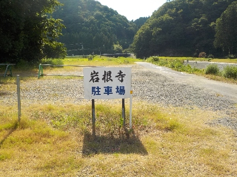
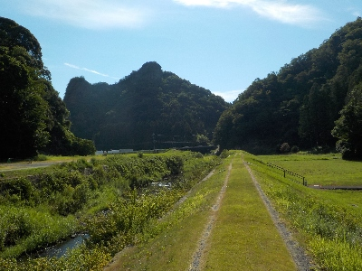
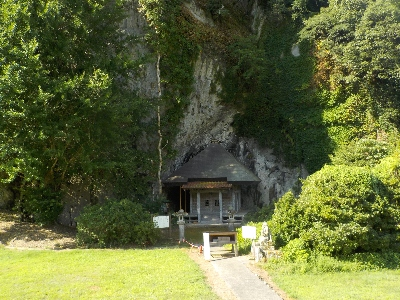
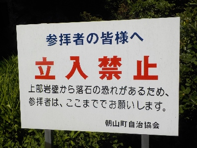
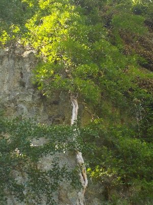
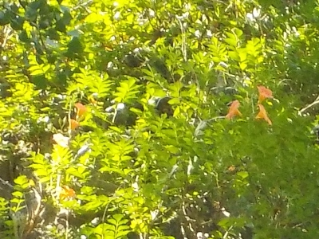
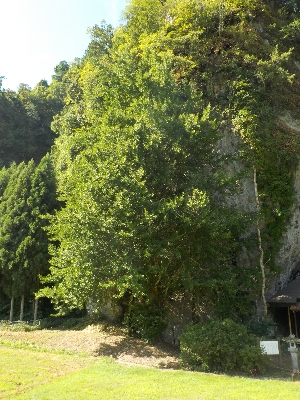
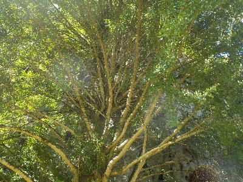

岩根寺にノウゼンカズラを見に行きました。
更新日 : 2025/08/03
駐車場への入り口はこちらです。看板の誘導に従って行きましょう。上の画像はグーグルマップなので、場所の確認ができます。

駐車場です。

駐車場近くの橋を渡り、岩根寺に向かいます。なにげにいい景色です。

お堂の左側にある白い筋がノウゼンカゼラです。真っすぐ高く昇っています。

近くに行ってみたかったですが、落石の恐れがあるため立ち入り禁止でした。

ノウゼンカズラの上のほうはこんな感じ。

ズームにするとこんな感じ。オレンジ色の花が咲いていました。
時期が悪かったかもしれないですが、花数が少なかったです。

ノウゼンカズラの隣にはイチョウがあります。紅葉するとニュースになったりする有名な木です。

イチョウは勢いのいい枝が沢山出ていました。生命感がありました。
紅葉時期にまた見に行きたいです。